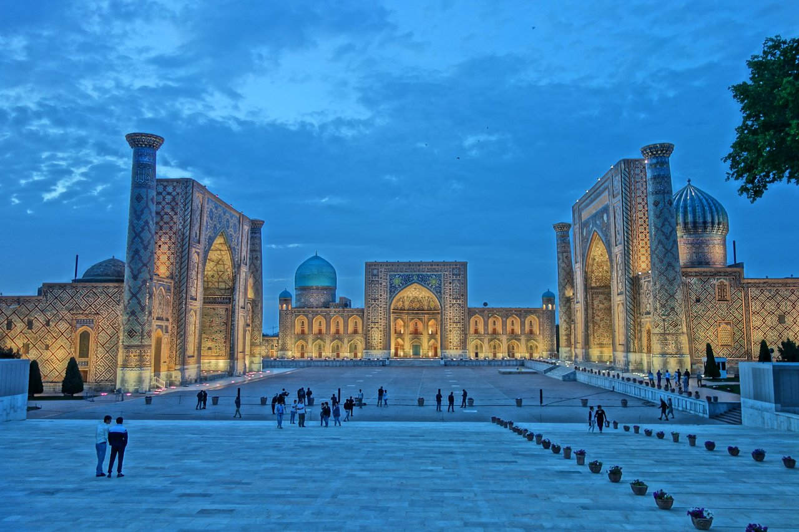
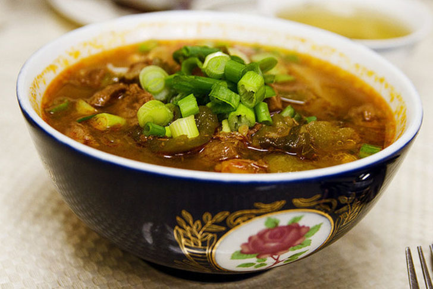
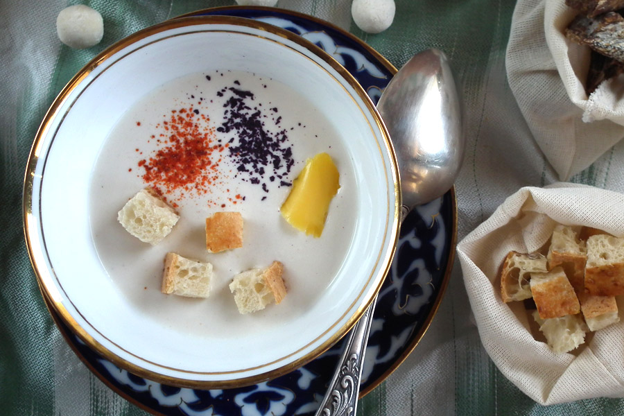
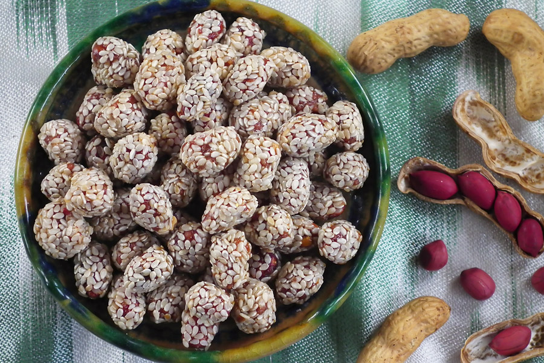

×

Uzbekistan
Традиционная еда
Супы — В узбекской национальной кухне супы занимают важное место, и очень популярны как у этнических узбеков, так и у других народов, населяющих республику. Узбекские супы довольно густые и насыщены овощами, такими как: морковь, свекла, лук, а также зеленью и всевозможными приправами.

Плов — символ узбекской кухни. Его готовят во всех домах Узбекистана, неважно узбекская семья, русская, татарская или корейская. Узбекский плов – это часть менталитета жителей страны.

Кисломолочные блюда — Узбекские кисломолочные блюда занимают особое место в национальной кухне Узбекистана. Узбекские кисломолочные блюда появилась как следствие кочевого образа жизни предков узбеков.

Восточные сладости — Неотъемлемой составляющей узбекской кухни являются восточные сладости. Самые знаменитые из восточных сладостей это – халва и нават. Халва – сладкое восточное угощение, которое готовится из пшеничной муки и сахара с орехами. Нават - это уваренный кристаллический виноградный сахар с добавлением красителей и пряностей.

____